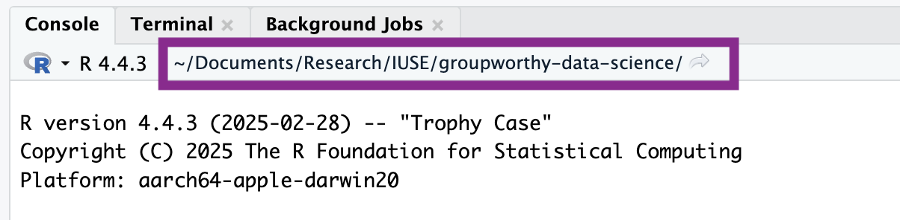
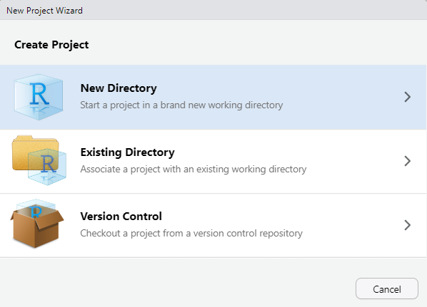
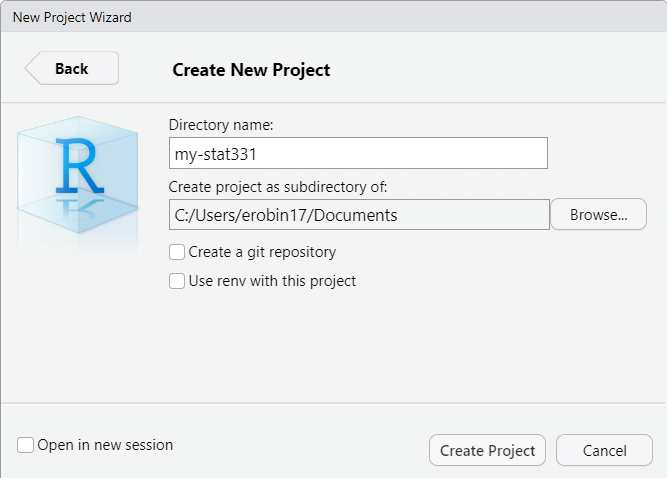
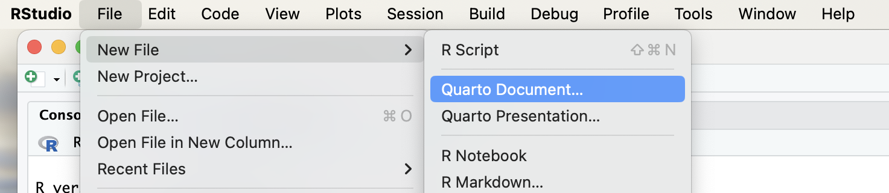

Week 1, Part 2: Reproducible Analyses with Quarto
The theme of this lesson is good management of your files and data. In part two of this week’s coursework you will learn how to identify folders and paths, and create Quarto documents.
📖 Readings: 45 minutes
📽 Watch Videos: 30 min
💻 Activities: 5-10 min
✅ Check-ins: 2
1 Principles of Reproducibility
1.1 File Management
As boring as it sounds, file management is arguably one of the most important skills a data scientist should have. The reproducibility of a project depends just as much on the way in which the project was stored as the computing tools used. While using R and Quarto make an important step in creating a reproducible analysis, there are other pieces that are arguably just as important—such as file management.
Evidently, there has been a bit of generational shift as computers have evolved: the “file system” metaphor itself is outdated because no one uses physical files anymore. This article is an interesting discussion of the problem: it makes the argument that with modern search capabilities, most people use their computers as a laundry hamper instead of as a nice, organized filing cabinet.
File Systems
Regardless of how you tend to organize your personal files, it is probably helpful to understand the basics of what is meant by a computer file system – a way to organize data stored on a hard drive. Since data is always stored as 0’s and 1’s, it’s important to have some way to figure out what type of data is stored in a specific location, and how to interpret it.
Stop watching at 4:16.
File Paths
That’s not enough, though - we also need to know how computers remember the location of what is stored where. Specifically, we need to understand file paths.
When you write a program, you may have to reference external files - data stored in a .csv file, for instance, or a picture. Best practice is to create a file structure that contains everything you need to run your entire project in a single file folder (you can, and sometimes should, have sub-folders).
For now, it is enough to know how to find files using file paths, and how to refer to a file using a relative file path from your base folder. In this situation, your “base folder” is known as your working directory - the place your program thinks of as home.
1.2 Directories, Paths, and Projects
In R, there are two ways to set up your file path and file system organization:
- Set your working directory in
R(do not recommend) - Use RProjects (preferred!)
Working Directories in R
To find where your working directory is in R, you can either look at the top of your console or type getwd() into your console.
getwd()[1] "C:/Users/cann4817/Desktop/spring-2026/weeks"Although it is not recommended, you can set your working directory in R with setwd().
setwd("/path/to/my/assignment/folder")R Projects
📖 Required Reading: Workflow and Projects
Since there are often many files necessary for a project (e.g. data sources, images, etc.), R has a nice built in system for setting up your project organization with R Projects. You can either create a new folder on your computer containing an R Project (e.g., you have not yet created a folder for this class) or you can add an R Project to an existing folder on your computer (e.g., you have already created a folder for this class).
To create a R Project, first open RStudio on your computer and click File > New Project, then:


Give your folder a name (it doesn’t have to be my-stat331). However, it is good practice for this file folder name to not contain spaces.
Then, browse on your computer for a location to save this folder to. For example, mine is saved in my Documents. Make sure you know how to find this; it should NOT be saved in your Downloads!

This new folder, my-stat331 should now live in your Documents folder (or wherever you save it to) and contain a my-stat331.Rproj file. This is your new “home” base for this class - whenever you refer to a file with a relative path it will begin to look for it here.
To add a R Project to an existing folder on your computer (e.g., you already created a folder for this class), first open RStudio on your computer and click File > New Project, then:

Then, browse on your computer to select the existing folder you wish to add your R Project to. For example, mine is saved in my Documents and called my-stat331.

Your existing folder, my-stat331 should now contain a my-stat331.Rproj file. This is your new “home” base for this class - whenever you refer to a file with a relative path it will begin to look for it here.
CautionYour folder cannot synch with anything online!
Your STAT 331 folder cannot be in a folder stored on OneDrive or iCloud! Storing your folder in this location will cause your code to periodically not run and I cannot help you fix it.
1.3 ✅ Check-in 1.3: Stat 331 Folder & R Project
Take a screenshot of your class directory, showing:
- the location of your Stat 331 folder
- an R Project included in your Stat 331 folder
- a Week 1 sub-folder
2 Reproducible Documents
Over the last ten years, science has experienced a “reproducibility” crisis. Meaning, a substantial portion of scientific findings were unable to be recreated because people didn’t sufficiently document the processes they used. As such, a foundational aspect of scientific research is using tools which allow others to reproduce your findings.
Enter Quarto—a dynamic document that allows us to interweave R code and written text in the same document. Gone are the days of copying and pasting the results of your R code into a Word document—breaking the connection between your analysis and your report. Quarto is here to save the day!
2.1 Downloading Quarto
The software associated with Quarto is automatically downloaded with the newest versions of RStudio. So, if you are using the most up to date version of RStudio (as instructed in Part 1 of this week’s coursework), you should already have Quarto installed on your computer. But, let’s test it out.
To ensure you have Quarto installed, carry out the following process:
- Open RStudio
- Click on “File” (in the upper navigation bar)
- Select “New File” (in the dropdown options)
- Select “Quarto Document…” (in the dropdown option)

If you have Quarto installed, you should be prompted with the following menu:
![A screenshot of the menu that should appear when you carry out the process described above. The menu is a square box with a title reading 'New Quarto Document'. On the left hand side of the box, the user can select what type of Quarto product they wish to create (Document, Presentation, or Interactive). On the right hand side, the user can control various aspects of their document, including the title, the author, the type of rendered document (HTML, PDF, or Word). At the bottom there are options to 'Create an Empty Document' (a barebones document), to 'Create' a document (with the user specified options), or 'Cancel'.](images/week-1/new-quarto-doc.png)
If, instead, you receive a message saying Quarto is not installed on your computer, you need to download Quarto: https://quarto.org/docs/download/
2.2 Introduction to Quarto
📖 Required Reading: Intro to Quarto
HTML Documents
We will exclusively use HTML documents in this course. If you are interested in learning more about formatting options for Quarto HTML documents, I would recommend checking out:
2.3 ✅ Check-in: 1.4 Quarto Documents
Question 1: What are the options at the top of a Quarto document (between the --- and --- symbols) called?
- XML
- YAML
- REML
- TOML
Question 2: What symbols create an R code chunk?
```{r}```{r}`{r}`
Question 3: What symbol defines a heading?
$_*#
Question 4: When working in a Quarto document, the [visual / source] editor will display the raw Quarto document, whereas the [visual / source] will display the document as it will appear when it is rendered.
Question 5: To produce an HTML report from your Quarto document, you need to click the ____ button.
Visual
Render
Render on Save
Save